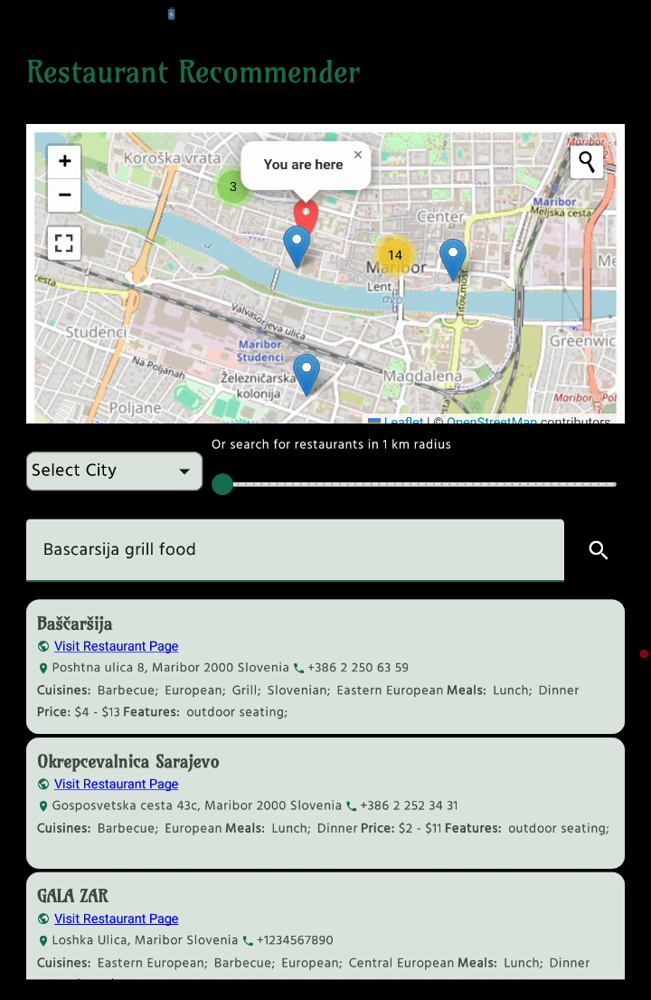

PDF
<!-- .slide: class="title-slide" --> ## OpenWebSearch.eu - Building an Open Index of the Web on HPC Infrastructure Prof. Dr. Michael Granitzer Chair of Data Science, University of Passau Coordinator OpenWebSearch.eu <div> HPCSE 2026 · IT4Innovations · 2026-05-20 </div> <!-- Why an open web index matters --> --- <!-- .slide: class="module-slide" --> ## Web Search Today A critical resource managed as an oligopoly -- ### Two properties that don't fit - A **critical infrastructure** for society, comparable to satellite navigation - A **market oligopoly**: dominated by a small number of gatekeepers (Google, Microsoft, Baidu, ...) <div class="gap-lg"> </div>  -- ### But does it matter? Yes — on four dimensions <div class="grid-2"> <div class="column"> **User Choice & Democracy** - Single gatekeeper for society's information - Search rankings can shift voting preferences by **20–72%** (SEME) - Monopolistic ranking = single point of failure for information quality </div> <div class="column"> **Societal & Security Risks** - European OSINT depends on US-controlled infrastructure - Filter bubbles, algorithmic bias - Misinformation & Disinformation </div> <div class="column"> **Untapped Richest Information Source** - 60 % of web pages carry structured data - No open access to web-scale document collections - Science, research and technology heavily depend on the Web as platform </div> <div class="column"> **AI & Innovation** - Web data is the fuel for LLMs, RAG, and agentic AI - Closed indices block reproducible research & open innovation </div> </div> <div class="c-info center"> Being able to navigate the Web is as fundamental as GPS or the power grid </div> -- ### Challenges <div class="figure-100">  </div> <div class="grid-3"> <div class="column-2"> - High infrastructure costs - Broad range of technical skills required - Big Data Infrastructure - Natural Language Processing, Image Analysis - Web Technologies - Growing legal uncertainties </div> <div class="column-1 fade-in"> <div class="c-info"> High upfront costs to tap the Web as resources — especially small innovators and researchers are left behind </div> </div> </div> <!-- Mission --> --- <!-- .slide: class="module-slide" --> ## OpenWebSearch.eu — Our Mission <div class="c-info center"> Building an Open Index of the Web and an open infrastructure to reduce upfront costs for researchers, innovators and companies in tapping the Web as a resource for search, web-analytics and AI. </div> -- <div class="grid-3"> <div class="column-1"> ### Four Objectives 1. **Open Technology Stack** Open-source pipelines for crawling, preprocessing, indexing 2. **Resource Provision** Building a network of infrastructure providers (EuroHPC / AI Factories) 3. **Added Value Services** Dashboard, tools, data access APIs 4. **Bootstrapping the Ecosystem** Third-party calls, community building, applications and use-cases </div> <div class="column-2"> ### 14 Core Partners  <div class="c-info small center"> Plus 16 financially supported third-party projects (FSTPss) </div> </div> </div> <div class="c-orange center small"> Funded by **Horizon Europe** (NGI programme) </div> -- ### The Open Web Index (OWI) A **Web Index** = a data structure for fast query-based access and ranking of web documents — the core of every web search engine <div class="c-info center"> **Our Proposition:** A collaboratively created, open and transparent Web Index running on existing HPC computing centres / AI Factories in Europe </div> <div class="figure-90">  </div> <div class="slide-citation"> Granitzer, Michael, et al. "Impact and development of an Open Web Index for open web search." *Journal of the Association for Information Science and Technology* (2023). </div> <!-- What is the Open Web Index --> --- <!-- .slide: class="module-slide" --> ## What is the Open Web Index? -- ### What is the Open Web Index? <div class="c-orange small tight"> A **Web Index** = data structure for fast, ranked retrieval of web documents — the core of every search engine. The OWI provides such an index plus the associated metadata/text as open data. </div> <div class="grid-3 tight fade-in"> <div class="column-2"> <div class="figure-90">  </div> </div> <div class="column-1"> <div class="c-info small"> **The OWI provides:** - **Pull** — download daily pre-built index shards (by date, language, topic) - **Build** — create a local index from your own data - **Push** — contribute custom indices back to the OWI </div> </div> </div> <div class="c-green small tight fade-in"> **Three output types per daily run:** - `index.ciff.gz` — sparse inverted index (CIFF format; pre-configured tokenizer) - `metadata_*.parquet` — document metadata & enrichments (topics, microdata, locations, language, etc.; extensible) - Dense embeddings (GPU-enriched slice, Jina V3) for AI-based Search and Classification (on selected subsets) </div> -- ### OWI at a Glance — Statistics (Feb 2026) <div class="grid-2"> <div class="column"> **Crawling** | | | |---|---| | Pages crawled | ~39 B total, ~12 B unique | | Unique hosts | ~500 M (extrapolated) | | Crawling effort | 1,927 machine-days | | Avg. throughput | ~20 M URLs / day | </div> <div class="column"> **Index** | | | |---|---| | Documents indexed | ~10.7 B | | Unique domains | ~75 M | | Public datasets | 511 main / 1,511 total | | Index size | 45 TB (main) / 50 TB total | | Embeddings | 119 M docs · 884 GB | </div> </div> <div class="c-green small"> **Top languages:** English (38.9%), German (7.2%), Spanish (6.4%), French (5.7%), Russian (5.2%) **Comparison:** To meet commercial index size, OWI would need to scale by a factor of 20× — factor 10–50× for multimedia </div> <!-- Building the Open Web Index --> --- <!-- .slide: class="module-slide" --> ## Building the Open Web Index -- ### Conceptual Workflow <div class="figure-80">  </div> -- ### Daily Workflow Pipeline <div class="grid-4"> <div class="column column-3"> <div class="figure-90">  </div> </div> <div class="c-info small column-1"> **Infrastructure (2026)** - **25 VMs** across IT4I, LRZ, CSC, CERN - **100 M URLs / day** crawling capacity - **~1.1 PB** raw data · **~50 TB** index · **810+ public datasets** - Federated storage: iRODS + S3, orchestrated via LEXIS </div> </div> <div class="c-important small"> **Limitations as of 2026** - TLR 5/6: it is not a product (yet) - No 24/7 Operations - Limited funding - minimum engineering / improvement </div> <!-- HPC and LEXIS in the OWI pipeline --> --- <!-- .slide: class="module-slide" --> ## OWI on HPC Infrastructure -- ### Why the OWI is an HPC Workload <div class="grid-2"> <div class="column"> **Web-scale data path** - crawl and archive web pages as WARC data - preprocess text, language, metadata, links, quality signals - build sparse index shards in CIFF - publish aligned Parquet metadata for analytics - enrich selected slices with dense embeddings </div> <div class="column"> **The bottlenecks shift by stage** | Stage | Dominant pressure | |---|---| | Crawling | network, scheduling, politeness | | WARC processing | I/O, parsing, decompression | | Indexing | memory, sorting, parsing, CPU | | Metadata analytics | columnar scans | | Embeddings | GPU throughput, vector storage | </div> </div> <div class="c-info small"> The Open Web Index is not just a search demo. It is a recurring, data-intensive production workflow that turns web-scale raw data into reusable search and AI datasets. </div> -- ### How We Use LEXIS for the Open Web Index <div class="grid-2"> <div class="column"> **LEXIS Worfklows to build the OWI** - coordinates OWI workflows across participating HPC/data centers - connects compute jobs with federated storage locations - helps stage input data and publish daily OWI outputs - supports the operational bridge between crawling, processing, indexing, and distribution </div> <div class="column"> <div class="figure-90">  </div> <div class="tiny center"> Workflow orchestration via LEXIS </div> </div> </div> <div class="c-green small"> LEXIS is the core component for how OpenWebSearch.eu turns distributed HPC resources into a repeatable Open Web Index build process. </div> -- ### From Indexing to Embedding at Scale <div class="grid-2"> <div class="column"> **Classical OWI output** - sparse inverted files for lexical retrieval - metadata partitions for filtering and analytics - compact daily shards by date, language, data center, and collection </div> <div class="column"> **New AI-oriented output** - dense document embeddings for semantic retrieval - topic/domain/language slices for RAG systems - compression and pruning to make vector indices affordable - GPU workloads that must be scheduled next to classic indexing jobs </div> </div> <div class="c-orange small"> The HPC question is no longer only: "Can we crawl and index the web?" It is also: "Can we semantically enrich web-scale collections often enough to support AI search?" </div> <!-- Accessing the OWI --> --- <!-- .slide: class="module-slide" --> ## Accessing the Open Web Index -- ### The Dashboard — openwebindex.eu <div class="grid-3"> <div class="column-2"> <div class="figure-90">  </div> <div class="c-info small"> 424 registered users · 17,000+ unique visitors · 70,000+ page views </div> </div> <div class="column-1 small c-green"> **Central entry point for the Open Web Index [openwebindex.eu](https://openwebindex.eu)** - **OWI Statistics** — crawl volume, index size, language distribution, dataset timeline - **OWI Datasets** — browse, filter and download index shards (by DC, date, format, language) - **Search** — demo content search + SERCI integration </div> </div> -- ### Dashboard — Statistics & Datasets <div class="grid-3"> <div class="column-2"> <div class="figure-90">  </div> </div> <div class="column-1 small c-green"> **OWI Statistics (04/26)** - **1,389 TB** crawled · **281** WARC datasets · **1,696** public datasets · **35.09 TB** index - Language distribution chart (English 38%, German 8%, French 6%, ...) - Crawl volume over time per data center + dataset collection distribution by type - Datasets over time </div> </div> -- ### Dashboard — Statistics & Datasets <div class="grid-3"> <div class="column-2"> <div class="figure-90">  </div> </div> <div class="column-1 small c-info"> **OWI Datasets Tab** - Status of repositories - Filter by datacenter, format (WARC / Parquet / CIFF / Embeddings), language, date - Dataset cards with download links — LEXIS Portal or owilix CLI - Parquet file preview directly in the browser </div> </div> -- ## Download Tool: owilix <div class="grid-2"> <div class="column small"> **[owilix — The OWI Command-Line Tool](https://opencode.it4i.eu/openwebsearcheu-public/owi-cli)** Git-like versioning for index datasets — pull, build, push: ```bash owilix remote pull all:latest/collectionName=main owilix local ls all:latest ``` Slice by: **domain**, **language**, **topic** (Curlie), **sitelist**, **structured data**, **outlinks** Authentication via B2ACCESS / Keycloak (LEXIS SSO) </div> <div class="column"> <div class="figure-90">  <div class="tiny center"> [https://opencode.it4i.eu/openwebsearcheu-public/owi-cli/](https://opencode.it4i.eu/openwebsearcheu-public/owi-cli/) </div> </div> </div> </div> <div class="grid-2"> <div class="column small"> **Remote Index — Query first, then Download** - Parquet partitions directly queryable via **DuckDB** or **Apache Spark** - Full-text search - SQL access: filter by language, domain, date — no full-shard download needed - Enables search + filtering + download (but still in alpha phase) </div> <div class="column mid"> <div class="figure-90">  </div> </div> </div> -- <div class="grid-2"> <div class="column"> ### The OpenWebSearch Book **Comprehensive Documentation at [openwebindex.eu/book](https://openwebindex.eu/book)** Covers the full OWI ecosystem: - Getting started with owilix - Building vertical search engines with MOSAIC - Data formats: CIFF, Parquet, embeddings - Pipeline architecture and HPC deployment - Legal & ethical guidelines for index users Published as an open, continuously updated online resource — aligned with deliverables and community feedback. </div> <div class="column"> ### Access Modes at a Glance | Tool | Mode | Best for | |------|------|----------| | [Dashboard](https://openwebindex.eu) | Browser | Explore, monitor | | [owilix](https://opencode.it4i.eu/openwebsearcheu-public/owi-cli) | CLI | Download, slice, build | | Remote index | DuckDB/SQL | Query + download | | [MosaicRAG](https://mosaicrag.ows.eu) | Conversational | RAG & chat over OWI | </div> </div> <div class="c-info center tight"> All software, data formats and access tools are **open source** </div> <!-- Using the OWI in applications --> --- <!-- .slide: class="module-slide" --> ## Using the Open Web Index -- ### Using the Open Web Index — Search and RAG <div class="grid-3 tight"> <div class="column figure-90">  </div> <div class="column figure-90">  </div> <div class="column figure-90">  </div> </div> <div class="grid-3 small"> <div class="column"> **OUR²S** Hosted search UI and REST API for online retrieval directly over OWI content. </div> <div class="column"> **Mosaic vertical search** Domain-specific search engines for science, health, arts, and other focused collections. </div> <div class="column"> **Earth observation search** RAG-based access to scientific papers, datasets, and geo-contextualized web content. </div> </div> <div class="c-info small"> The OWI is useful when the application needs inspectable web-scale source material, not only a black-box answer. </div> -- ### Using the Open Web Index — Domain Applications <div class="grid-4 tight"> <div class="column figure-90">  </div> <div class="column"> <div class="figure-90" style="height: 9.3em; overflow: hidden;"> <p></p> </div> </div> <div class="column figure-90">  </div> <div class="column figure-90">  </div> </div> <div class="grid-4 small"> <div class="column"> **Research.fi** National research discovery enriched with OWI-derived scientific web content. </div> <div class="column"> **Restaurant recommender** Privacy-preserving local recommendation from extracted restaurant features. </div> <div class="column"> **Argumentation search** Pro/con argument retrieval over curated OWI slices. </div> <div class="column"> **Institutional search** CERN institutional search and disability knowledge search. </div> </div> <div class="c-green small"> The practical pattern: take an OWI slice, add domain-specific retrieval and enrichment, then expose it through search, RAG, or recommendation. </div> <!-- Data for AI / LLMs --> --- <!-- .slide: class="module-slide" --> ## Using the Open Web Index - Data for AI and LLMs -- ### Using the Open Web Index — Data & Analytics <div class="grid-2"> <div class="column"> **Published Datasets** | Dataset | Scale | Use case | |---|---|---| | **WebFAQ** | 96M Q&A, 75 langs | QA training, cross-lingual IR | | **WebFAQ 2.0** | 198M pairs, 108 langs | Dense retrieval, hard negatives | | **Imprints** | 5.25M hosts, geocoded | Enterprise analytics, Eurostat | | **German Commons** | 154B tokens | German LLM pre-training | | **OWS-Curlie-2025** | 20.7M docs + qrels | IR evaluation benchmark | All datasets available at [openwebindex.eu/corpora](https://openwebindex.eu/corpora) </div> <div class="column"> **Analytics Potential** - **Official Statistics**: enterprise data extraction from legal imprints (Eurostat, Destatis) - **Media Monitoring**: supply chain analysis, news monitoring (JRC) - **AI Training Data**: domain-specific corpora for LLM fine-tuning - **Evaluation Benchmarks**: web-scale IR test collections with relevance assessments - **Trend Analysis**: temporal web monitoring at Petabyte scale <div class="c-info center"> The OWI is not just for search — it is a data infrastructure for the web-scale analytics ecosystem </div> </div> </div> -- ### OWI Corpora — Curated Data for AI <div class="grid-2"> <div class="column"> <div class="figure-90">  </div> </div> <div class="column"> **From raw index shards to reusable AI datasets** - curated collections prepared for reuse and distribution - licensing metadata: creator, terms, full licence text - domain-specific and project-specific corpora - suitable for training, fine-tuning, evaluation, and RAG ingestion - access control and storage handled through the OWI/LEXIS infrastructure <div class="c-info small"> The corpora page is where the OWI becomes a catalog of usable AI data products, not only a list of daily technical shards. </div> </div> </div> <!-- Search to AI-based search --> --- <!-- .slide: class="module-slide" --> ## From Search to AI-Based Search -- ### Retrieval Modes on the Open Web Index <div class="figure-72">  </div> <div class="grid-3 small"> <div class="column c-note"> **Sparse search** - exact terms and fields - BM25-style ranking - efficient inverted indices - strong for names, facts, rare terms </div> <div class="column c-info"> **Dense search** - semantic similarity in vector space - robust to paraphrases - useful for RAG and question answering - needs vector storage and fast ANN </div> <div class="column c-green"> **Hybrid search** - combine lexical and semantic evidence - use metadata filters - rerank with embeddings or LLMs - balance precision and recall </div> </div> <div class="c-orange small"> The IR progression: lexical matching gives efficient candidates; embeddings add semantic matching; hybrid search combines both and raises the serving question. </div> -- ### Embeddings Encode Relations <div class="grid-2"> <div class="column"> <div class="figure-90">  </div> </div> <div class="column"> The classical word embedding example illustrates the intuition: <div class="c-info"> `king - man + woman ≈ queen` </div> Embeddings place objects in a vector space where some semantic relations become approximately geometric operations. </div> </div> <div class="c-orange"> For search this creates a systems question: low-latency vector retrieval needs large vector indexes, often RAM-resident or close to RAM, plus substantial persistent storage. </div> -- ### CoRECT: Evaluating Embedding Compression at Scale <div class="grid-2-1 small"> <div class="column"> <div class="figure-80">  </div> <div class="tiny"> Jina v3, CoRECT line chart, NDCG@10. Source: [padas-lab-de.github.io/CoRECT](https://padas-lab-de.github.io/CoRECT/) </div> <div class="figure-60 c-gap">  </div> <div class="tiny"> Jina v3, CoRECT Pareto plot, NDCG@10. Source: [padas-lab-de.github.io/CoRECT](https://padas-lab-de.github.io/CoRECT/) </div> </div> <div class="column c-green"> **CoRECT** - Controlled Retrieval Evaluation of Compression Techniques - compares quantization, binarization, truncation, PCA, LSH, and PQ - CoRE varies corpus size and document length independently - passage retrieval: 65 queries, 10K to 100M passages - document retrieval: 55 queries, 10K to 10M documents - paper: [arXiv:2510.19340](https://arxiv.org/abs/2510.19340) </div> </div> -- ### CoRECT: Compression Trade-Offs <div class="grid-2"> <div class="column"> **Results** - non-learned compression can strongly reduce index size - up to 100M passages, loss can be statistically insignificant - best compression choice is model-dependent - retrieval quality degrades with corpus complexity, but not uniformly </div> <div class="column"> **Serving conclusion** - uncompressed dense indexes are expensive to keep fast - FP casting, scalar quantization, truncation, binarization, LSH, PCA, and PQ occupy different cost-quality regions - the best point is not universal; it depends on model, metric, and corpus complexity - open theoretical question: which ranking families can binary vectors express under Hamming distance or binary dot product? </div> </div> <div class="c-green"> Compression is a serving and storage decision: it trades RAM, storage, latency, and ranking quality. </div> <!-- Agentic Search --> --- <!-- .slide: class="module-slide" --> ## Agentic Search -- ### From Search Engine to Search Agent <div class="grid-2"> <div class="column"> <div class="figure-90">  </div> **Classical search** - user writes one query - system returns ranked documents - user reformulates manually - interaction is mostly stateless </div> <div class="column"> <div class="figure-90">  </div> **Agentic search** - plan retrieval steps - call search, tools, and memory - evaluate partial evidence - adapt to user and task context - synthesize answer with provenance </div> </div> <div class="c-info"> Agentic search is retrieval inside a control loop: plan, retrieve, check, refine, and answer. </div> -- ### PersonaRAG: Retrieval with User-Centric Agents <div class="c-note"> **PersonaRAG:** Model roles, strategies and preferences as in-context LLM Personas. </div> <div class="grid-3-1"> <div class="column"> <div class="figure-90">  </div> <div class="tiny"> Figure from PersonaRAG, [arXiv:2407.09394](https://arxiv.org/abs/2407.09394) </div> </div> <div class="column small"> **Design tension** Standard RAG retrieves passages for a query, but not for a user's changing intent, preferences, and interaction history. **Mechanism** - user profile agent - contextual retrieval agent - live session agent - document ranking agent - feedback agent <div class="c-orange small"> The search result becomes a personalized evidence set, not just a ranked list. </div> </div> </div> -- ### PersonaRAG: Evaluation and Findings <div class="grid-2-1"> <div class="column"> <div class="figure-90">  </div> <div class="tiny"> Text similarity experiment from PersonaRAG, [arXiv:2407.09394](https://arxiv.org/abs/2407.09394) </div> </div> <div class="column small"> **How it was tested** - NaturalQuestions, TriviaQA, WebQuestions - 500 sampled questions per dataset - GPT-3.5 with top-3 and top-5 passages - accuracy for answer correctness - BLEU-2 for response adaptation/similarity analysis **What changed** - more than 5% basline improvement and 10% over vanilla RAG on WebQuestions - robust with both top-3 and top-5 passages - outputs better reflect user-centric interaction signals </div> </div> <div class="c-green small"> Remaining challenge: personalization improves answers, but provenance, privacy, and controllability of user models become central retrieval questions. </div> -- ### NuggetIndex: Governed Local Fact Retrieval <div class="c-note"> **Agent Memory:** how to manage epistemic agent memory with knowledge dynamics? </div> <div class="grid-2-1"> <div class="column"> <div class="figure-90">  </div> <div class="tiny"> Architecture figure from NuggetIndex, [arXiv:2604.27306](https://arxiv.org/abs/2604.27306) </div> </div> <div class="column small"> **Design tension** Agents should not repeatedly retrieve long passages when the useful unit is an atomic fact with validity, evidence, and lifecycle state. **Mechanism** - extract atomic nuggets from text - store validity intervals and evidence links - assign active, deprecated, or contested state - filter invalid facts before ranking - retrieve compact local facts for generation </div> </div> <div class="c-orange"> The index becomes agent memory: small facts, governed over time, linked back to evidence. </div> -- ### NuggetIndex: Evaluation and Findings <div class="grid-2"> <div class="column"> <div class="figure-90">  </div> <div class="tiny"> Efficiency figure from NuggetIndex, [arXiv:2604.27306](https://arxiv.org/abs/2604.27306) </div> </div> <div class="column small"> **How it was tested** - RAVine / nuggetized MS MARCO for static coverage - TimeQA and SituatedQA for temporal correctness - MuSiQue and HotpotQA for multi-hop QA - latency, input length, recall, conflicts, governance score **What changed** - nugget recall improves by 42% - temporal correctness increases by 9.1 percentage points - conflict rate drops by 55% - median generator input drops from 887 to 320 tokens - sparse nugget retrieval reaches sub-millisecond latency </div> </div> <div class="c-green small"> Remaining challenge: the extraction and governance pipeline must stay correct as sources, facts, and agent memories evolve. </div> <!-- Agent Collaboration --> --- <!-- .slide: class="module-slide" --> ## Agent Collaboration Systems -- ### Why Agents Need Collaboration Infrastructure <div class="figure-72">  </div> <div class="grid-2"> <div class="column small"> **Single-agent retrieval is limited** - each agent rediscovers sources - provenance is hard to share - successful workflows remain local </div> <div class="column small"> **Collaboration layer** - share useful sources and retrieval scopes - expose skills and tools to other agents - maintain reusable knowledge units - exchange workflow patterns </div> </div> <div class="c-info small"> As retrieval becomes agentic, infrastructure has to support agents as first-class users of search systems. </div> -- ### YOARS: Agent-Facing Collaboration over OWI <div class="grid-2"> <div class="column small"> **YOARS** Your Open-Web Index Agent Retrieval System - agent-facing layer over OUR2S and OWI - designed for discovery of sources, skills, workflows, and tools - built around agent-maintained knowledge nuggets - current system development, no paper yet </div> <div class="column figure-90">  </div> </div> <div class="grid-2 small"> <div class="column"> **Collaborative search now** - agents query open retrieval infrastructure - agents curate and reuse atomic knowledge - agents publish useful sources, skills, and traces </div> <div class="column"> **Collaborative search next** - make agent-to-agent collaboration part of the search stack - study trust, provenance, reuse, and governance for shared agent work </div> </div> <div class="c-orange small"> YOARS should be presented as current system development and future research direction, not as a finished benchmark result. </div> -- ### Open Agentic Search Stack <div class="grid-3"> <div class="column c-note"> **OWI** Open web-scale data, metadata, sparse index shards, and embeddings </div> <div class="column c-info"> **$OUR^2S$** Operational retrieval service over OWI slices and partner-operated corpora </div> <div class="column c-green"> **YOARS** Agent collaboration layer for sources, skills, workflows, tools, and nuggets </div> </div> <div class="c-orange"> The strategic point: open web data plus open retrieval plus agent collaboration can become a European alternative to closed agent search stacks. </div> <!-- Conclusion --> --- <!-- .slide: class="module-slide" --> ## Conclusion -- ### Takeaways <div class="grid-2 tight"> <div class="column c-note"> **Open web data infrastructure** - reusable web-scale data product - CIFF, Parquet, embeddings - build from slices, not from scratch </div> <div class="column c-info"> **Search is changing** - sparse remains essential - dense adds semantic access - hybrid and agentic retrieval expand IR </div> <div class="column c-green"> **Why HPC matters** - recurrent web-scale processing - GPU-heavy embedding pipelines - compression and serving at scale </div> <div class="column c-orange"> **Research frontier** - limits of binary embeddings - governed local fact indexes - auditable collaborative search </div> </div> <div class="takeaway center"> OpenWebSearch.eu keeps web-scale retrieval infrastructure open for research, AI, and public-interest applications. </div> --- <!-- .slide: class="module-slide" --> ## Before we come to the Questions -- ### We are looking for ... <div class="grid-2"> <div class="column"> **Helping Hands** - **Researchers & tech innovators** — develop new search & retrieval paradigms, content analysis algorithms, and evaluation methods on the OWI - **Data centres & HPC providers** — help host a distributed, federated Open Web Index across Europe (EuroHPC / AI Factories) - **Application builders** — build vertical search engines, RAG systems, and analytics tools on top of the OWI - **Data Analysts** - analyze the OWI for various purposes </div> <div class="column"> **Helping Funds** - **Industry & business partners** — explore business models around an open web index; co-fund applied research - **Policy makers & public institutions** — help shape the governance of an open search ecosystem; co-fund public-good use cases (statistics, media monitoring, government search) - **Research funders** — the OWI is a unique open infrastructure for web-scale NLP, IR, and AI research — we are actively seeking follow-up projects </div> </div> -- ### Get in touch | | | |---|---| | **Website** | [openwebsearch.eu](https://openwebsearch.eu) | | **Dashboard** | [openwebindex.eu](https://openwebindex.eu) | | **Code Repository** | [https://opencode.it4i.eu/openwebsearcheu-public/](https://opencode.it4i.eu/openwebsearcheu-public/) | | **Community** | [openwebsearch.eu/community](https://openwebsearch.eu/community/ows-eu-community-on-mattermost/) | | **Join** | [join@openwebsearch.org](mailto:join@openwebsearch.org) | | **General** | [community@openwebsearch.eu](mailto:community@openwebsearch.eu) | <div class="c-info center"> **Thank you — Questions, Comments, Feedback very welcome!** </div>